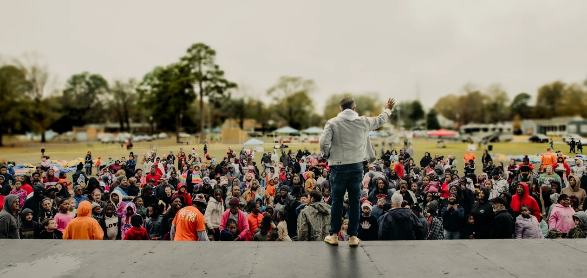
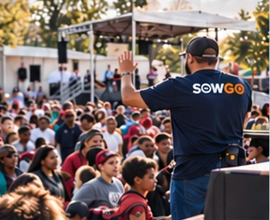
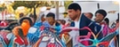

People
We love and reach people with the Gospel of the Kingdom, right where they are.

SowGo mobilizes people to love, serve, sow, and go—locally and globally—preaching the Gospel of the Kingdom and demonstrating the life-giving power of God to a lost and hurting world.
An outreach ministry of Champion Life Church.
We love and reach people with the Gospel of the Kingdom, right where they are.
We go to communities near and far with hope, practical help, and purpose.
We see lives transformed by the power of God and people equipped to make a difference.
Reaching communities with the Gospel of the Kingdom around the world.
Ministry-reported impact.Some sow. Some go. Some do both.
Be part of what God is doing. Whether you sow, go, pray, or partner,
you can help preach the Gospel of the Kingdom and bring hope to a lost and hurting world.
Fuel outreach locally and globally to share the Gospel of the Kingdom and meet real needs.
Sow NowBe part of local and global outreach trips to preach, serve, and bring hope to the nations.
View OpportunitiesLift up our teams, communities, and ongoing outreach efforts for a greater harvest.
Prayer RequestsYou can partner with SowGo to take the good news of the gospel to a hurting world!
Become a PartnerOutreach opportunities
Preach the Gospel of the Kingdom, meet real needs,
and bring hope to communities around the world.
All bars are zeroed for design review—not live donation totals. Event targets and connected reporting will be added after approval.
Discipleship & follow-up
Many people ask, “What happens to the people who get saved?” Our heart is to help every person who responds to Jesus take their next step—not leave them at their first step.
We invite new believers into a 13-week discipleship journey and encourage connection with the local church involved in the outreach. Our connected systems are being prepared to help track progress, support follow-up, and keep people growing in their faith.
Use the existing website pathway. App access is being prepared.
Build a foundation in God’s Word, one step at a time.
Progress and local-church follow-up tools are part of the planned launch.
This Gospel of the Kingdom changes everything.
We go to the nations with the Gospel of the Kingdom, bringing hope, a future, and the transforming, life-giving power of God to a lost and hurting world.
Through Jesus, salvation is more than escape from hell. We are made kings and priests—equipped to reign in this life, stand in Christ’s authority over the devil, and walk in God-given purpose.
Our mission is rooted in Matthew 24:14.
Be Part of the Mission

Bicycles, tablets, footballs, basketballs, groceries, and practical support demonstrate God’s love. The Gospel of the Kingdom is the heart of every outreach.